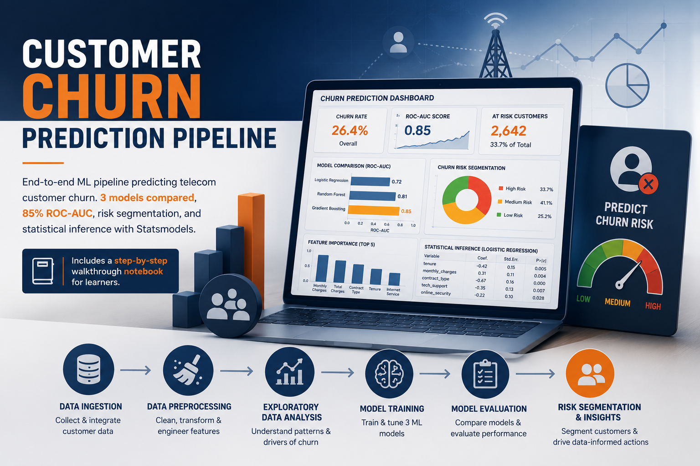
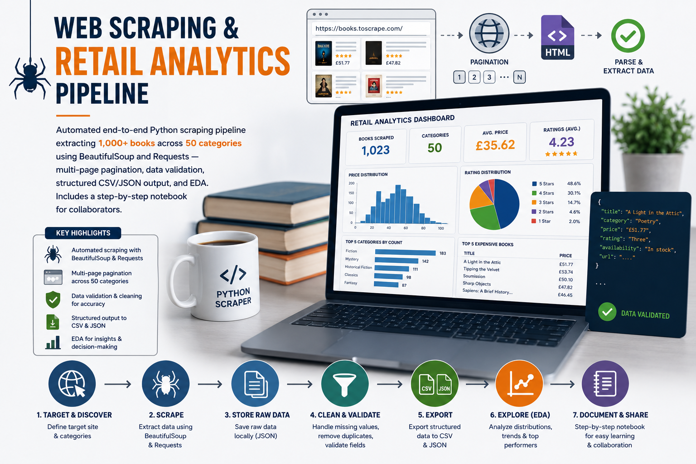
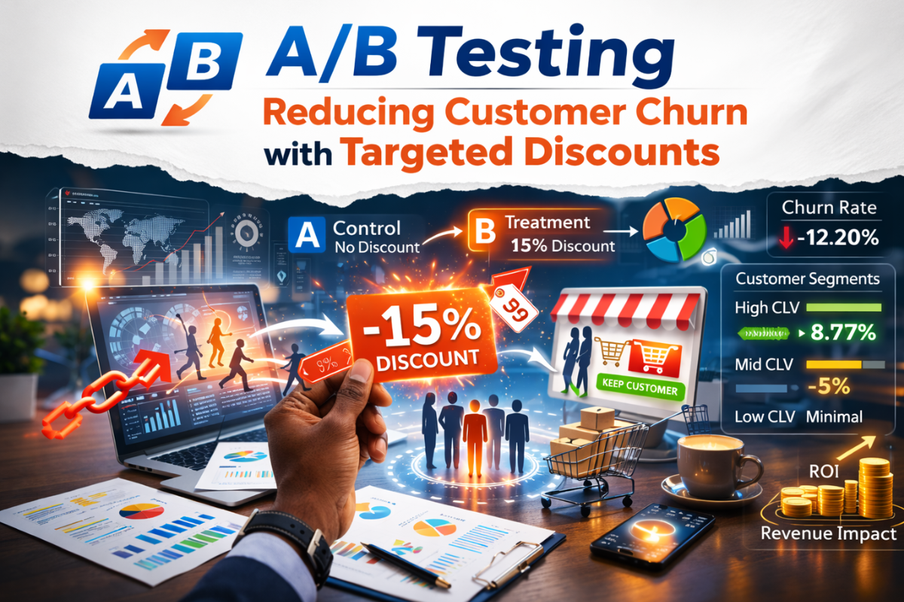

Data Scientist & Analyst
Data Scientist and Analyst with 3+ years of experience delivering end-to-end analytical workflows across telecom, finance, healthcare, agriculture, and public sector domains. I specialize in Python, machine learning, and statistical analysis; building reproducible pipelines that go from raw data to actionable business decisions. Experienced in prompt engineering and LLM evaluation workflows, with a proven track record of translating complex analytical findings into insights that drive measurable impact.
Skills
Experience
Education
Certifications

End-to-end ML pipeline predicting telecom customer churn; 3 models compared (Logistic Regression, Random Forest, Gradient Boosting), 85% ROC-AUC, risk segmentation, and statistical inference with Statsmodels. Includes a step-by-step walkthrough notebook for learners.


Built an end-to-end Python data pipeline to ingest and transform multi-sheet retail data, engineering derived features including profit margin and discount tiers. Delivered a four-page interactive Power BI dashboard with executive KPIs and geographic profitability mapping.
Built predictive analytical models on insurance claims data to identify high-risk customer segments and fraud indicators. Delivered an interactive Power BI dashboard with real-time KPIs on claim volume, approval rates, loss ratios, and customer segmentation.
Copyright © 2025 ROE. All rights reserved.